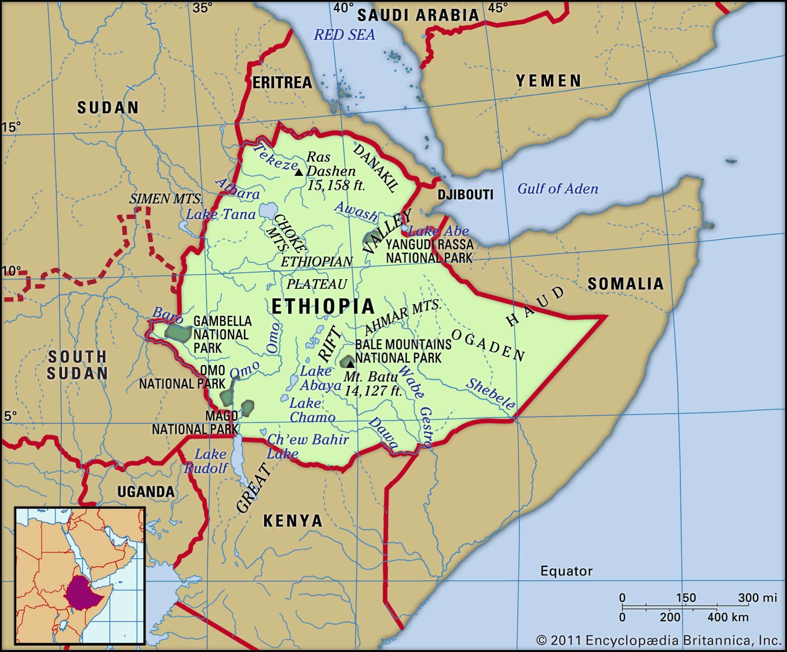

Explore history, geography and culture of Ethiopia!
Introduction
Brief Overview: Ethiopia is one of the oldest nations in the world with a rich history dating back thousands of years. It is known for its unique traditions, ancient kingdoms, and diverse landscapes.
Ethiopia’s Location: Located in East Africa.
Name Meaning: Historically linked to “land of the burnt faces”.
Map Overview: Below is a map showing Ethiopia's position in Africa.

Historical Journey
Ancient Civilizations and Kingdoms
Axumite Empire
The Axumite Empire was one of the great ancient civilizations known for its impressive stelae (tall stone monuments) and its early adoption of Christianity.
Queen of Sheba
The legend of the Queen of Sheba, who visited King Solomon, is an important part of Ethiopian lore.
Medieval Ethiopia
Ethiopian history includes the rise of the Ethiopian Orthodox Church and unique kings and dynasties that ruled the land for centuries.
Modern History
Resistance and Independence
Ethiopia is one of the few African countries never fully colonized. Its modern milestones include the formation of the modern state and resistance against colonial rule.
Geography Exploration
Natural Landscapes
Mountains & Highlands
Ethiopia has many highlands and mountains, including the Simien Mountains, which offer breathtaking views and unique wildlife.
Valleys & Rivers
The Great Rift Valley runs through Ethiopia, and rivers such as the Blue Nile help keep the lands fertile.
Lakes & Water Bodies
Ethiopia is home to several large lakes that play an important role for both people and nature.
Climate & Ecosystems
Varied Climate
The country experiences different climates—from cool highlands to hot lowlands—affecting its plants, animals, and people.
Biodiversity
Ethiopia boasts unique wildlife and plant species in its national parks and natural reserves.
Cultural Connections
Traditional Music and Dance: Explore how Ethiopia’s history and geography influence its music and dance.
Languages and Traditions: Discover the diversity of languages and cultural traditions in Ethiopia.
Historical Monuments: Learn about famous sites like Lalibela’s rock-hewn churches and the ruins of Axum.
Interactive Activities
Map Activity
Label the map of Ethiopia with its mountains, rivers, and valleys!
Timeline Creation
Create a timeline of key events in Ethiopian history. Add events below:
Storytelling & Role Play
Imagine you're in an ancient royal court or visiting the Queen of Sheba. Write your short story:
Art & Craft
Draw a picture of Ethiopia’s landscapes or historical monuments and share it with your teacher.
Summary & Discussion
Recap: Ethiopia’s ancient history, diverse geography, and vibrant cultural traditions make it a fascinating country to explore.
Group Discussion Questions:
What part of Ethiopian history surprised you the most?
How do you think Ethiopia’s geography influences its culture?
Reflection: Why is it important to learn about history and geography?
Materials Needed & Assessment
Materials Needed
A world map and a detailed map of Ethiopia
Images or videos showcasing Ethiopian landmarks
Art supplies for timelines, maps, and creative projects
Printed worksheets on Ethiopian history and geography